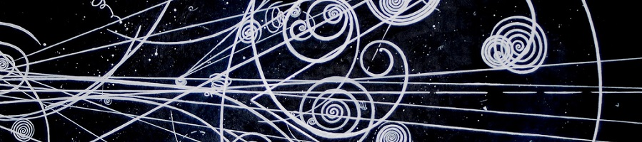

宇宙班
空から降るシャワー
突然なのですが、いまあなたの体を小さな粒が通過していきました。その粒は小さすぎて目には見えないのですが、いつもいつも年がら年中、空からやってきています。あっ、説明している間にまた一つ。
我々の体を貫くこの粒子の名は「ミューオン」。聞いたことがある人もいるかもしれません。我々の今回の企画の主役です。詳しくは来ていただければご説明するのですが……ええ？気になって仕方がないから今教えろって？なるほど、そこまで言うのであればしょうがないですね。軽い説明を以下にしましょう。
ミューオンは二次宇宙線と呼ばれるものの一つです。二次宇宙線というのは、平たく言えば、宇宙のいたるところを飛んでいるある種の粒子――一次宇宙線と呼ばれるもの――が地球に飛来し、大気中を通過したときに発生するもののことです。一つの一次宇宙線によってたくさんの二次宇宙線がつくられるので、空からは大量の宇宙線が休むことなく降り注いでいます。この現象を「空気シャワー」なんて呼んだりします。シャレオツですね。
目には見えないものを"みる"
ミューオンというものをなんとなく理解してもらったところで、そろそろこんなことを言われると思います。
「小さすぎて見えない！？じゃあどうやってその存在を確かめるんだ！」
そうなのですが、それが肝、非常に面白いところなのです。
これまで物理学は目には見えないものを"みて"きました。力や電気、はたまたニュートリノをはじめとする微小粒子。神秘のベールをまとった代物に勝負を仕掛け、その隠れ蓑を剝いできたのです。絞られた知恵の結晶である実験装置を武器に、闘ってきたのです。
今回の企画は、まさにその再現です。ミューオンという目には見えないものの存在を皆さんと一緒に確かめようと思っています。その場で実験装置を動かし、その場にあるミューオンを、その場で"みて"いただこうということです。
「見えないものを"みる"」そんなエキサイティングな体験のために、ぜひご来場ください。我々一同、お待ちしております。